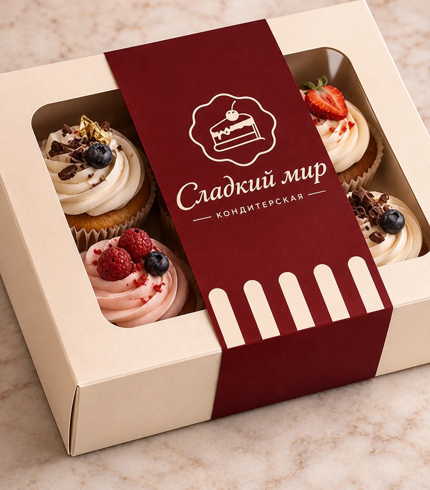
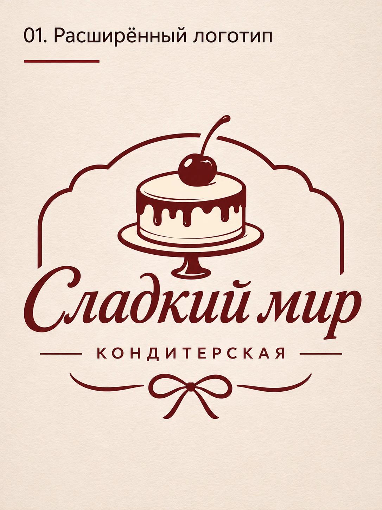
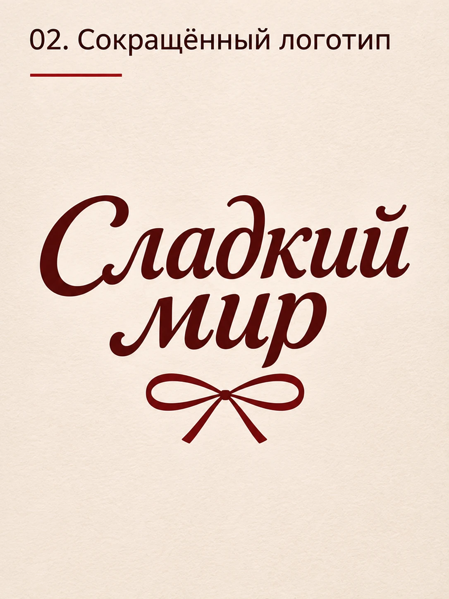
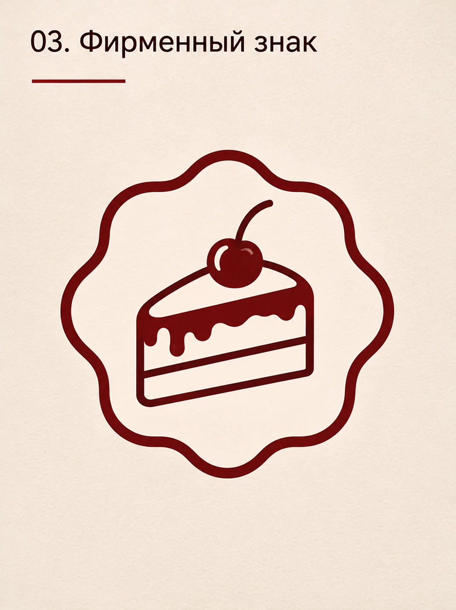
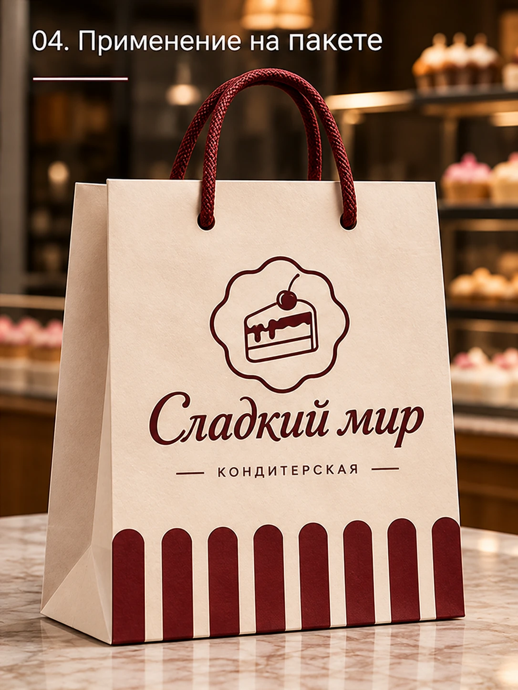
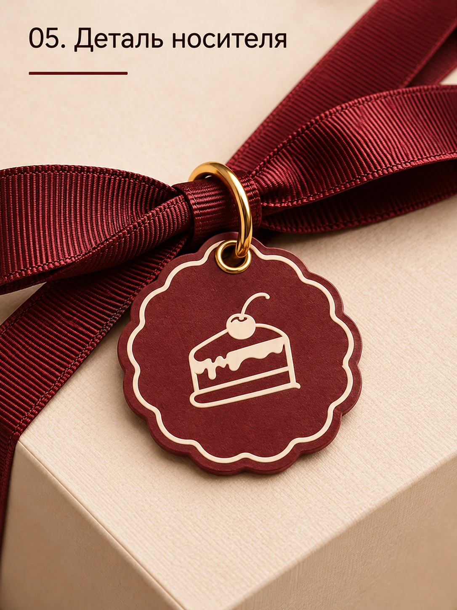
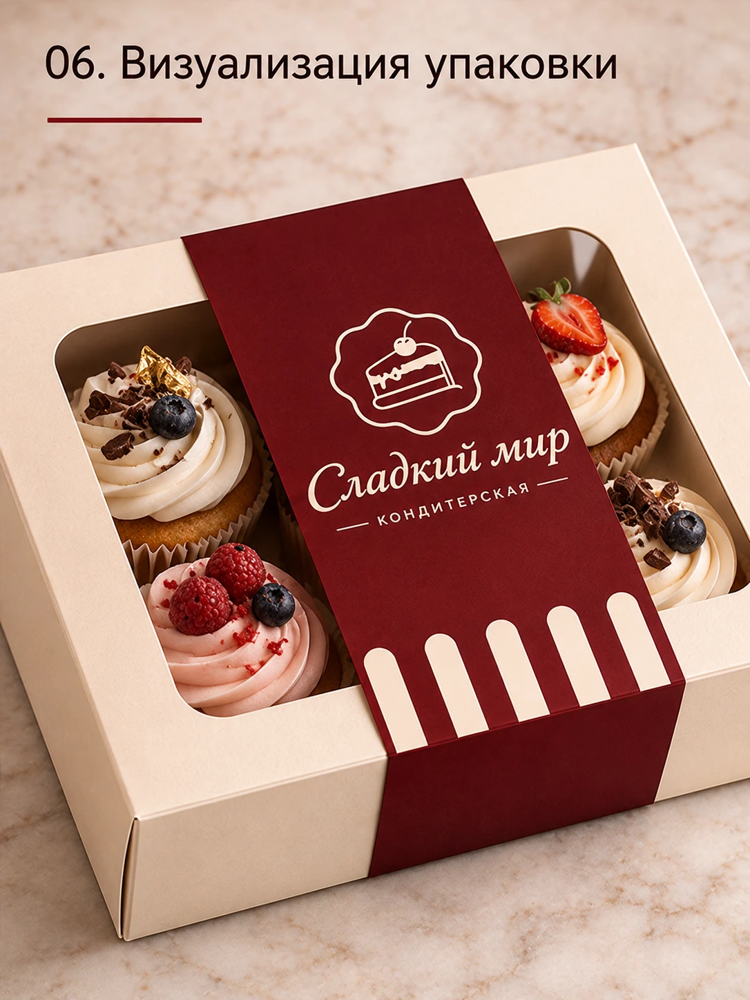
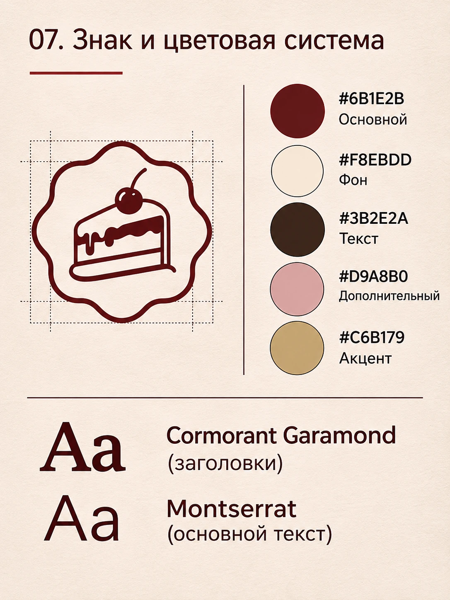
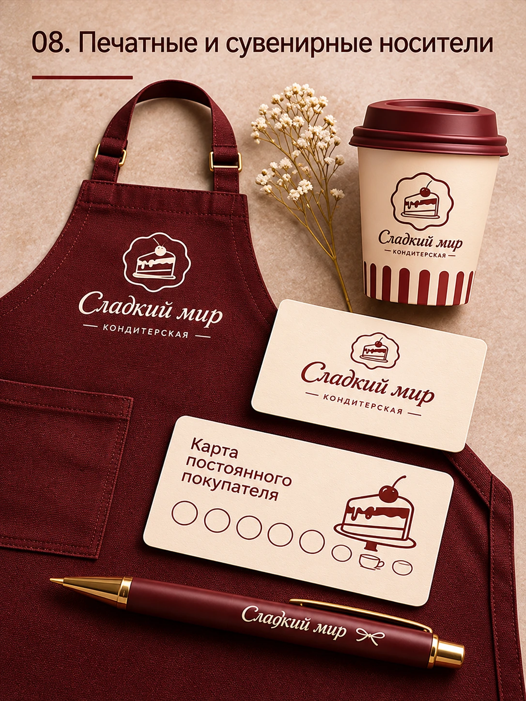

Задача
Создать цельный фирменный образ кондитерской «Сладкий мир» и показать его применение на основных носителях бренда - от логотипа до упаковки и сувенирной продукции.
Концепция фирменного стиля
Айдентика кондитерской, в которой нежная эстетика десертов сочетается с выразительной типографикой и глубокими кондитерскими оттенками.

Архив проекта / Selected material
От разработки логотипа и фирменного знака к упаковке, деталям оформления и сувенирным носителям.








В кейсе представлены концептуальные визуализации фирменного стиля и его применения на различных носителях. Проект выполнен в 2025 году.